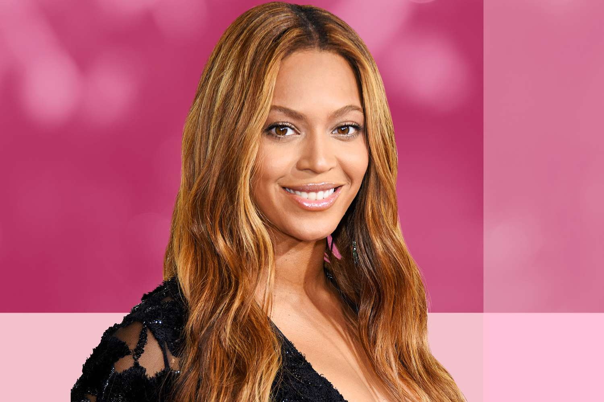

Welcome to The #1 Song on August 6, 2003 Crazy In Love!
On August 6, 2003, "Crazy in Love" by Beyoncé featuring Jay-Z took the music industry by storm, claiming the top spot on the charts and becoming a summer anthem globally. With its infectious beat, powerful vocals, and seamless blend of R&B, hip-hop, and pop elements, the song set a new standard for collaborations. Beyond its chart-topping success, "Crazy in Love" left an enduring legacy, influencing pop culture and establishing itself as a timeless classic that defined the early 2000s.
